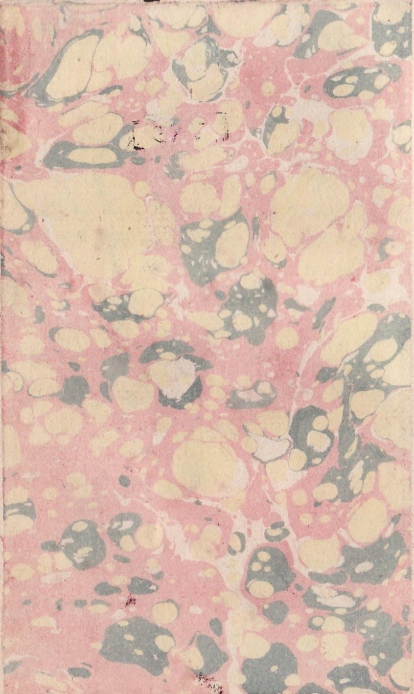

Launched: August 1, 1997
Last Modified: April 7, 2026
This mobile-friendly HTML version of Tristram Shandy has been developed
from several SGML files of the text available through
the Oxford Text Archive, with the permission
of the depositor Diana Patterson.
Prepared by Masaru Uchida
(
uchida.masaru.m7@f.gifu-u.ac.jp),
as a part of his Web site
"Laurence Sterne in Cyberspace"
Volumes 1 and 2 are based on the third edition
(London: R. and J. Dodsley, 1760), and
volumes 3 - 9 are based on the first edition,
apart from minor emendations
following the Florida edition of Tristram Shandy
(The University Presses of Florida, 1978).
Greek letters are latinized in bold italics.